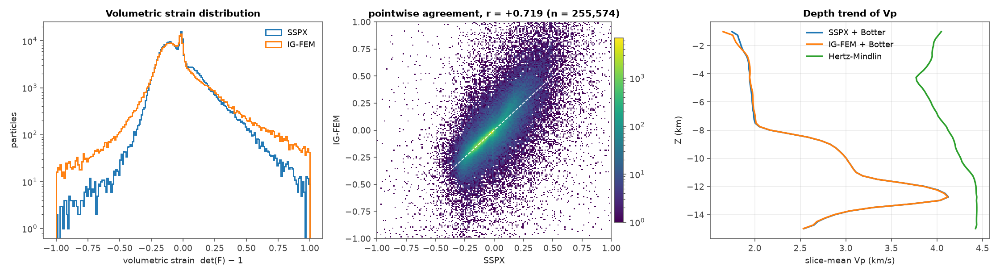
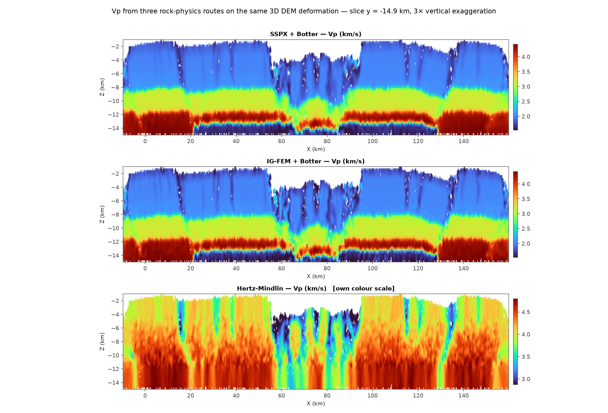
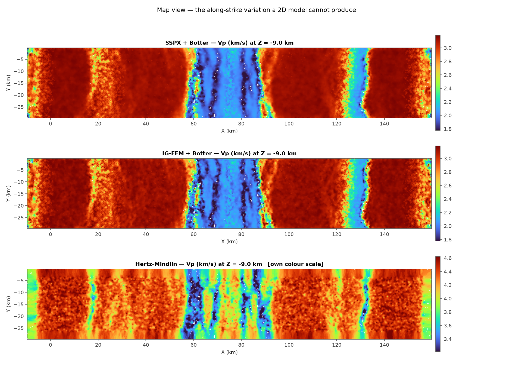
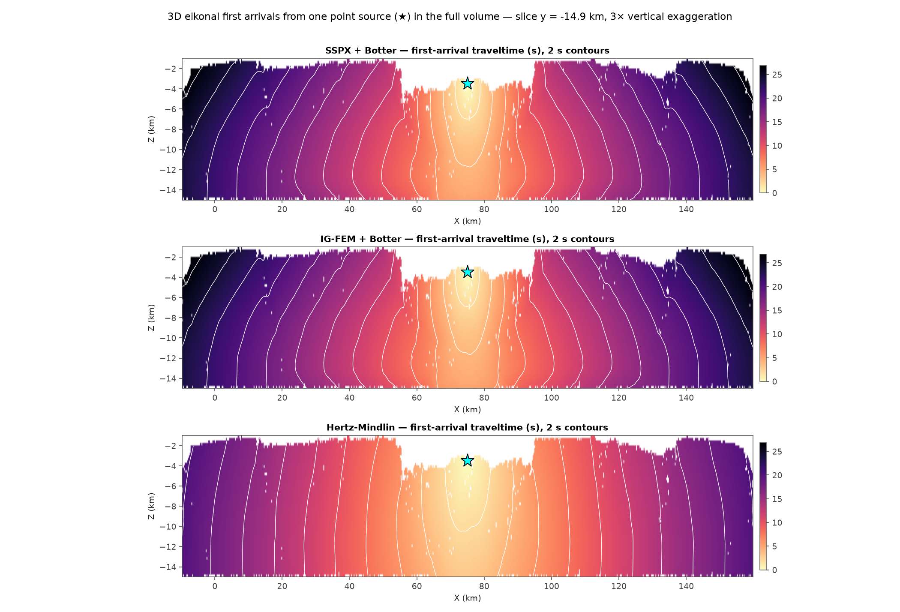
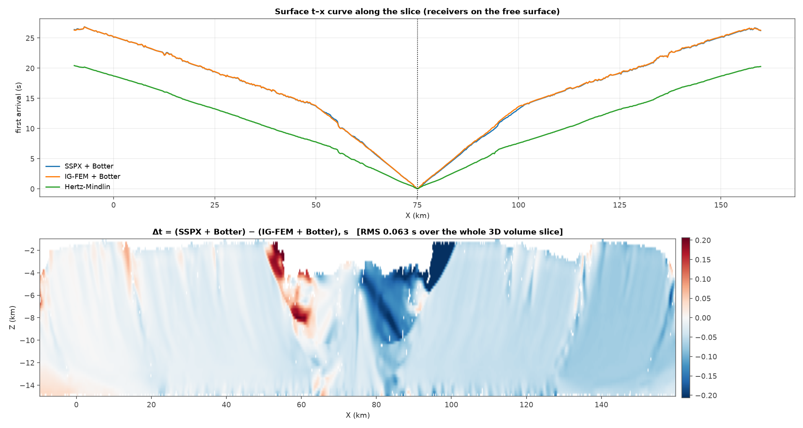
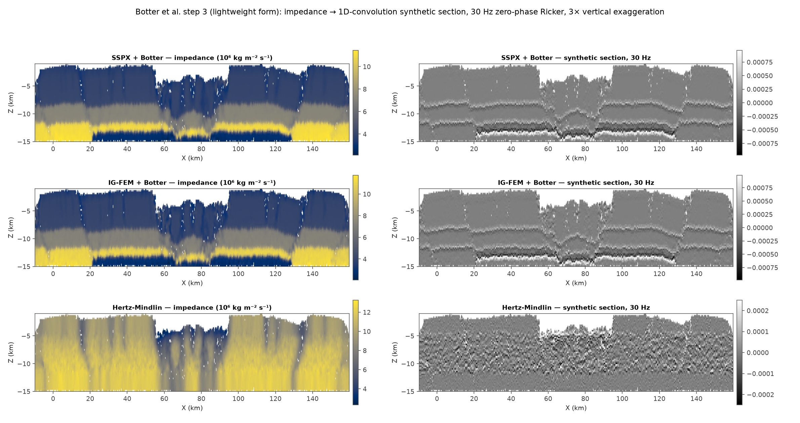

Two strain estimators and one contact-mechanics model, run on the same 259,943-particle 3D DEM extension model, carried all the way to first-arrival traveltimes and a synthetic seismic section. Where they agree turns out to say less than where they don't.
Nearest-neighbour local least-squares deformation gradient — the strain method Botter et al. themselves used, via Cardozo & Allmendinger's SSPX — pushed through their Eqs. (1)–(4).
This repository's global mass-matrix L2 projection of the element-wise deformation gradient onto the particles, through the same Eqs. (1)–(4) and the same reference state. Any difference from Route 1 is strain and nothing else.
No strain and no fitted curve: contacts → Hertzian forces → coordination number, porosity, coarse-grained pressure → K, G. 3D is this model's native setting; the earlier 2D application was the approximation.
In 2D these two estimators barely agreed at all: r = +0.055 pointwise. In 3D they agree at r = +0.719 over the 255,574 particles where both stay inside |det(F) − 1| < 1, and +0.580 including the outliers. Their bulk statistics are nearly the same — mean −0.0414 vs −0.0384, median −0.0650 vs −0.0682.
Most of that improvement is not dimensionality, it is mesh quality. The sliver filter now rejects tetrahedra on scale-invariant shape quality q = 6√2·V / L³max rather than absolute volume, which had silently removed nothing on a model whose element volumes run 10⁴–10⁸. At q ≥ 0.05 it drops 5.2% of elements and the recovered vol range collapses from ±390 to ±20, while the mean and median do not move at all.

The two Botter panels are hard to tell apart, and that is the point: they share the reference state exactly, so what you see is mostly the imposed 2.0 / 3.0 / 4.0 km/s layering with the strain modulating it by at most ±25%. Hertz–Mindlin has no layers to inherit and produces something structurally different — near-uniform background velocity cut by sharp low-velocity bands that follow the fault damage zones, where coordination number drops and local porosity rises.
Across the whole pack the HM velocity correlates with the Botter velocity at only r = +0.55, and with the IG-FEM volumetric strain at r = −0.36 — the right sign (dilatation slows the rock) from a model that never saw a strain field.


Solved in the full volume from a single source at (75.0, −14.9, −3.50) km, not slice by slice. The two Botter routes differ by an RMS of 0.067 s over the whole volume and 0.114 s at the surface — 0.7% of a mean arrival of 16.5 s, with a worst-case 0.478 s where the ray grazes the rift shoulder at x ≈ 94 km.
This is the same result as in 2D and it is the robust one: a first-arrival traveltime does not care which of the two strain estimators you used. Integration along the ray averages away pointwise disagreement that a scatter plot makes look fatal. Hertz–Mindlin is 32% faster and so lands 4.3 s off, but its traveltime pattern still correlates at +0.988 — because at this scale traveltime is dominated by geometry and the mean velocity, not by the rock physics.


Here the 3D result looks like a reversal of the 2D one. In 2D the SSPX and IG-FEM synthetic sections were uncorrelated, r = +0.011. In 3D they correlate at +0.971.
Almost all of that is the reference model, not the strain. The 3D setup gives both routes the same 2.0 / 3.0 / 4.0 km/s zone boundaries before any strain is applied, and a wavelet reflects off those far more strongly than off a ±25% strain perturbation; the 2D setup used a smooth linear depth trend with no contrasts at all. Building the section of the zero-strain reference model and regressing it out settles it:
| Correlation | SSPX | IG-FEM |
|---|---|---|
| vs the zero-strain reference section | +0.988 | +0.967 |
| SSPX vs IG-FEM, raw | +0.971 | |
| SSPX vs IG-FEM, reference removed | +0.405 | |
| strain-driven share of the amplitude | 0.157 | 0.254 |

| Observable | 2D | 3D | Reading |
|---|---|---|---|
| Volumetric strain, pointwise | +0.055 | +0.719 | mesh quality |
| Vp field, pointwise | — | +0.992 | shared reference |
| Traveltime, whole volume | 0.14 s | 0.067 s | robust |
| Seismic section, raw | +0.011 | +0.971 | misleading |
| Seismic section, reference removed | +0.011 | +0.405 | the real number |
| Hertz–Mindlin vs IG-FEM, traveltime | — | +0.988 | geometry-led |
| Hertz–Mindlin vs IG-FEM, section | +0.061 | +0.021 | independent |
Agreement between rock-physics routes is observable-dependent, and the dependence is not monotonic. Traveltime is forgiving: it integrates, so two strain fields that disagree pointwise still deliver arrivals within a percent of each other, in 2D and in 3D alike. The seismic image is unforgiving: it differentiates impedance, so it amplifies exactly the small-scale disagreement traveltime smoothed out.
The trap is that a section correlation can be high for the wrong reason. In 3D the +0.971 measures the layer model both routes were handed, not the strain either recovered. Any comparison of strain methods through a seismic image has to regress out the shared reference state first — otherwise the metric mostly reports how much structure the modeller put in by hand.
And Hertz–Mindlin remains the useful outlier. It agrees on traveltime because traveltime is geometry, and disagrees on the image because it is genuinely independent information: coordination number and contact-network porosity, which see the fault damage zones directly rather than through a fitted curve.
Median centre-to-centre spacing is 640 m against a median radius sum of 735 m, so geometric overlaps are ~13% of grain size. Reconstructed Hertzian forces give a coarse-grained pressure of 2.81 GPa — well above lithostatic at 15 km. The HM velocity level encodes the DEM's stiffness convention; only its pattern is meaningful.
K/G = 5(2−ν) / (3(5−4ν)) independently of coordination number, porosity and pressure, so Vp/Vs came out at 1.4281 with a standard deviation of 1.4×10⁻¹⁶ across all 118,019 valid particles. As a Vp/Vs generator this route is useless; as a Vp generator it is informative.
rock_physics.ZONES is a placeholder, not a calibration — the same status Botter et al. give their Table 3 before tuning it to sandstone and shale. Stage 4 shows how much of the seismic image it controls, so it is the first thing to replace with real material properties.
Every particle within one 3.04 km measurement sphere of the bounding box is excluded, so the HM field is extrapolated in the outer shell before gridding. The two Botter routes cover all 259,943 particles.